第 1 页 · 学习目标
学习目标
理解数据降维的基本概念。
掌握主成分分析（PCA）、奇异值分解（SVD）、多维缩放
（MDS）、等度量映射（Isomap）和局部线性嵌入（LLE）等方法。
学会借助 Python 实现数据降维操作。
第 2 页 · 数据降维
数据降维
数据降维，或称为数据维度归约（Data Dimension Reduction），即把高维空间中的数据样本映射到较低维空间中以简化数据，而且在简化数据的同时保证数据所包含信息的完整性。
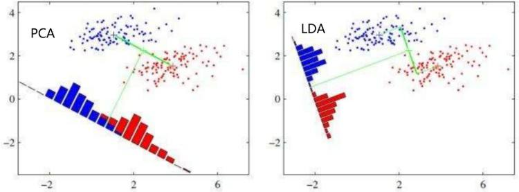
数据降维的意义
减少数据噪声、降低存储空间需求、提高计算效率、缓解“维数灾难”（数据维度增加导致的学习效率降低、样本间距离计算困难、模型复杂度增加等问题）。
第 3 页 · 目录
目录
1
主成分分析
奇异值分解
多维缩放
4
等度量映射
案例分析
5
第 4 页 · 目录
目录
1
主成分分析
奇异值分解
多维缩放
4
等度量映射
案例分析
5
第 5 页 · 主成分分析 (PCA)
主成分分析 (PCA)
原理概述
主成分分析（PCA）是一种线性数据降维方法，寻找一组新的坐标轴，将数据投影到低维空间，使数据在新的坐标轴上的方差最大，并保留尽可能多的原始数据的信息。
第 6 页 · 主成分分析 (PCA)
主成分分析 (PCA)
原理概述
主成分分析（PCA）是一种线性数据降维方法，寻找一组新的坐标轴，将数据投影到低维空间，使数据在新的坐标轴上的方差最大，并保留尽可能多的原始数据的信息。
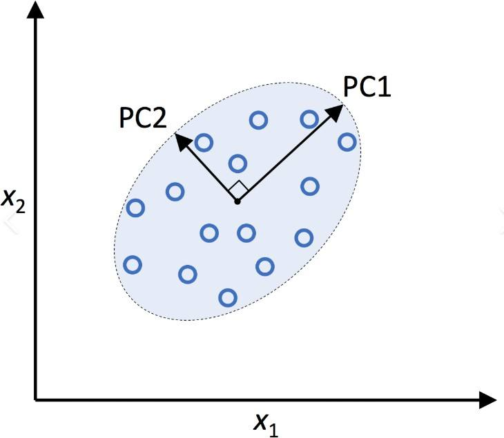
第 7 页 · 主成分分析 (PCA)
主成分分析 (PCA)
原理概述
主成分分析（PCA）是一种线性数据降维方法，寻找一组新的坐标轴，将数据投影到低维空间，使数据在新的坐标轴上的方差最大，并保留尽可能多的原始数据的信息。

主要目的
识别数据集中的隐藏模式；
通过去除数据中的噪声和冗余来降低数据的维度；识别相关变量
第 8 页 · 主成分分析 (PCA)
主成分分析 (PCA)
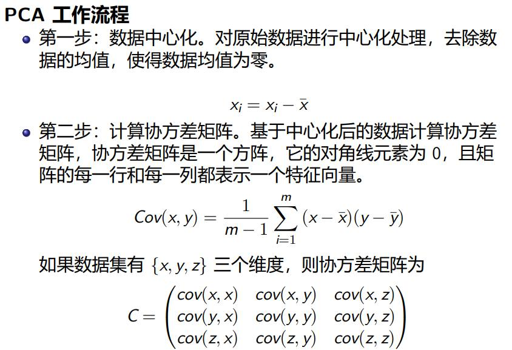
第 9 页 · 主成分分析 (PCA)
主成分分析 (PCA)
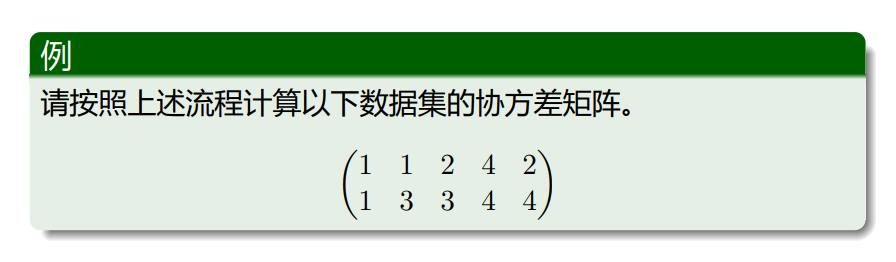
第 10 页 · 主成分分析 (PCA)
主成分分析 (PCA)
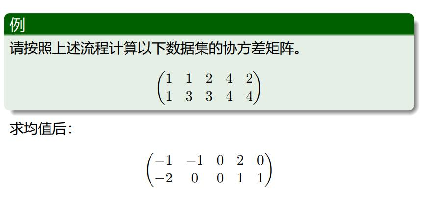
第 11 页 · 主成分分析 (PCA)
主成分分析 (PCA)
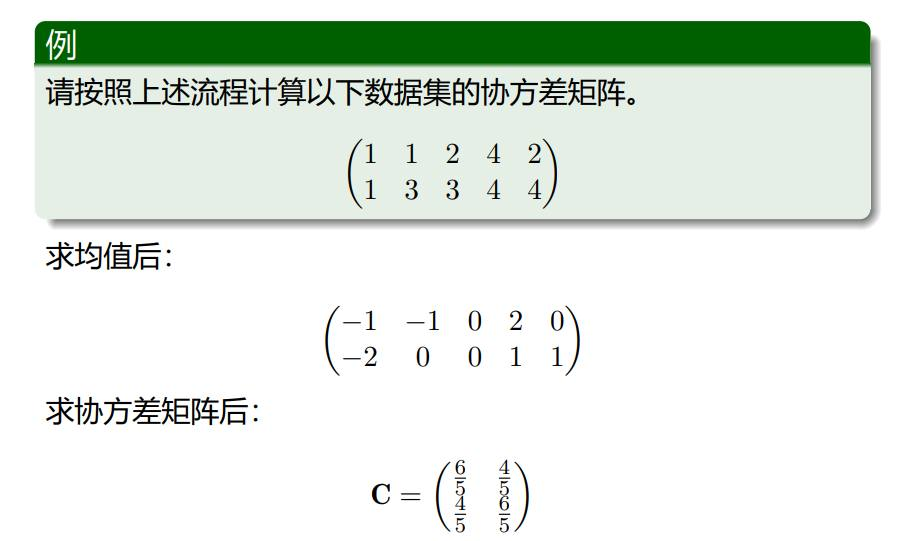
第 12 页 · 主成分分析 (PCA)
主成分分析 (PCA)
PCA 工作流程
第三步：计算特征值和特征向量。对协方差矩阵进行特征值分解，得到特征值和对应的特征向量。
C = WΛWT
特征值和特征向量求解
设 λ=λi 为矩阵 A 的一个特征值，则由方程
(A − λiE)x = 0
可求得非零解 x = pi，那么 pi 便是 A 的对应于特征值 λi 的特征向量。
第 13 页 · 主成分分析 (PCA)
主成分分析 (PCA)
例
请求解协方差矩阵的特征值和特征向量。协方差矩阵
C =
6 4
5 5
4 6
5 5
( )
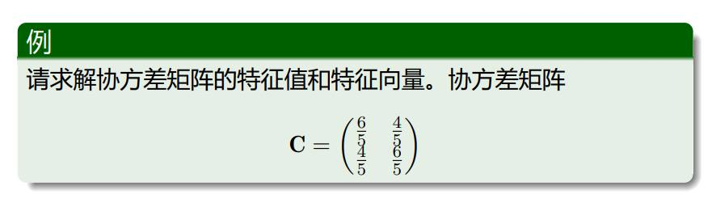
第 14 页 · 主成分分析 (PCA)
主成分分析 (PCA)
例
请求解协方差矩阵的特征值和特征向量。协方差矩阵
C =
6 4
5 5
4 6
5 5
( )
特征值
2
λ1 = 2, λ2 = 5
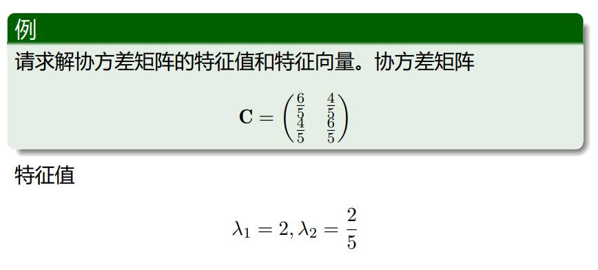
第 15 页 · 主成分分析 (PCA)
主成分分析 (PCA)
例
请求解协方差矩阵的特征值和特征向量。协方差矩阵
C =
6 4
5 5
4 6
5 5
( )
特征值
2
λ1 = 2, λ2 = 5
特征向量
p1 =
(
1
√
2
√1
2
, p2 =
—
1
√
2
√1
2
) ( )
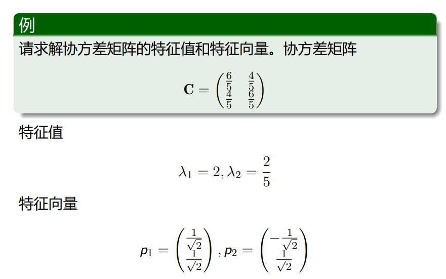
第 16 页 · 主成分分析 (PCA)
主成分分析 (PCA)
PCA 工作流程
第四步：对特征值从大到小排序，选择特征值最大的前 k 个特征向量作为新的坐标轴，构成降维后的数据方向。
1 2 k
并将对应的 k 个特征向量 pT, pT . . . pT 组成特征向量矩阵
k×n
P =
p
1
.
.
pk
例
特征向量矩阵
P =
(
1
1
√
2
√
—
√
2
2
1 √1
2
)
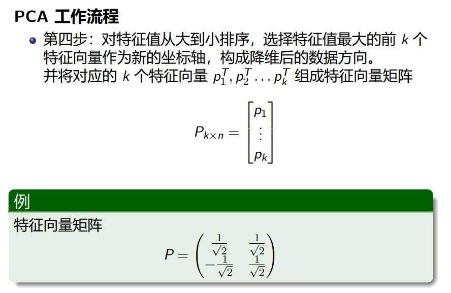
第 17 页 · 主成分分析 (PCA)
主成分分析 (PCA)
例
PCA 工作流程
第五步：将数据样本转换到 k 个特征向量构建的新空间中。降维后数据分解为 Y = PX。输出 Y。
执行 PCA 变换，选取最大特征值对应的特征向量。
Y =
√
2
1 1
√
2
( )
· −1 −1 0 2 0
−2 0 0 1 1
( )
=
(
—
√
3 − √1
2 2
0
√3
2
1
√
2
)
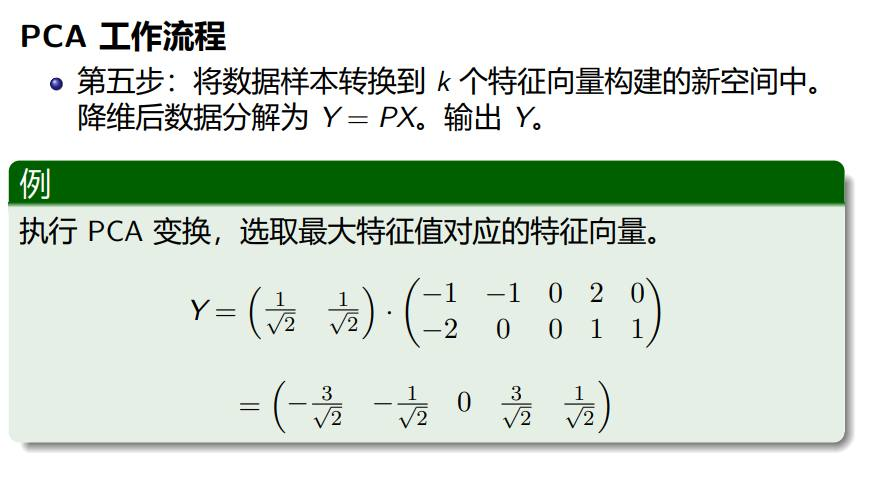
第 18 页 · 主成分分析 (PCA)
主成分分析 (PCA)
PCA 工作流程
第 19 页 · Python 实现主成分分析 (PCA)
Python 实现主成分分析 (PCA)
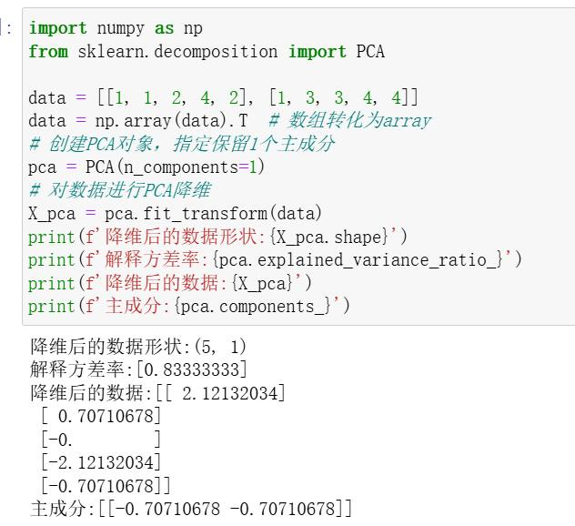
第 20 页 · 主成分分析 (PCA)
主成分分析 (PCA)
思考
下列场景是否适合使用PCA？
1、电商平台：给客户分群，使用下单次数、用户浏览时长、收藏数量等数据维度给用户贴标签。
2、医院：用血常规、肝功能、CT指标等数据诊断疾病，完成疾病预测任务。
第 21 页 · 主成分分析 (PCA)
主成分分析 (PCA)
PCA 方法的局限性
由于 PCA 方法追求的是在降维之后能够最大化地保留数据本身所具有的信息，即选择数据样本投影方差大的坐标方向作为所要保留的坐标方向。但是在某些情况下，在这样的坐标方向上投影对数据的区分作用并不大，甚至会使得数据杂糅而无法区分。也就是说，PCA 方法可能在某些分类问题中表现不佳。
第 22 页 · 主成分分析 (PCA)
主成分分析 (PCA)
第 23 页 · 目录
目录
1
主成分分析
2 奇异值分解
3 多维缩放
4
等度量映射
5
案例分析
第 24 页 · 奇异值分解 (SVD)
奇异值分解 (SVD)
原理概述
SVD是一种应用广泛的矩阵分解算法，可以用来提取出数据集中的重要特征信息，去除不重要的特征信息以及噪声。而且 SVD方法具有更强的普适性，相较于特征值分解方法而言，SVD 方法并不局限于方阵的分解，它可以针对一般形式的矩阵来进行分解。
第 25 页 · 奇异值分解 (SVD)
奇异值分解 (SVD)
原理概述
是一种应用广泛的矩阵分解算法，可以用来提取出数据集中的重要特征信息，去除不重要的特征信息以及噪声。而且 SVD方法具有更强的普适性，相较于特征值分解方法而言，SVD 方法并不局限于方阵的分解，它可以针对一般形式的矩阵来进行分解。
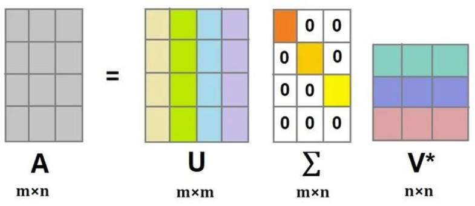
第 26 页 · 奇异值分解 (SVD)
奇异值分解 (SVD)
核心公式
A = UΣVT
其中，U 为左奇异向量组成的矩阵，Σ 为奇异值组成的对角矩阵，
V 为右奇异向量组成的矩阵。
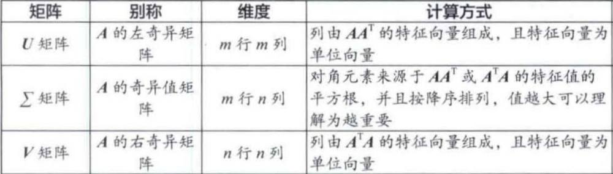
第 27 页 · 奇异值分解 (SVD)
奇异值分解 (SVD)
| 用户/外卖 | 麻辣烫 | 沙拉 | 粥 | 麻辣香锅 |
| 甲 | 5 | 2 | 2 | 4 |
| 乙 | 2 | 5 | 4 | 2 |
| 丙 | 4 | 3 | 3 | 5 |
原始矩阵
第 28 页 · 奇异值分解 (SVD)
奇异值分解 (SVD)
| 麻辣烫 | 沙拉 | 粥 | 麻辣香锅 | |
| 麻辣烫 | 45 | 28 | 27 | 41 |
| 沙拉 | 28 | 38 | 35 | 26 |
| 粥 | 27 | 35 | 33 | 25 |
| 麻辣香锅 | 41 | 26 | 25 | 45 |
属性矩阵
第 29 页 · 奇异值分解 (SVD)
奇异值分解 (SVD)
| 外卖属性 | 麻辣烫 | 沙拉 | 粥 | 麻辣香锅 |
| 重口味属性 | 0.5 | 0.2 | 0.2 | 0.5 |
| 清淡属性 | 0.2 | 0.5 | 0.5 | 0.2 |
| 无关属性1 | 0.1 | 0.1 | -0.1 | -0/1 |
| 无关属性2 | 0 | 0 | 0 | 0 |
VT矩阵
第 30 页 · 奇异值分解 (SVD)
奇异值分解 (SVD)
| 权重 | 麻辣烫 | 沙拉 | 粥 | 麻辣香锅 |
| 重口味属性 | 11.4 | 0 | 0 | 0 |
| 清淡属性 | 0 | 5 | 0 | 0 |
| 无关属性1 | 0 | 0 | 0 | 0 |
∑矩阵
第 31 页 · 奇异值分解 (SVD)
奇异值分解 (SVD)
| 重口味偏好 | 清淡偏好 | 无关偏好 | |
| 甲 | 0.9 | 0.1 | 0 |
| 乙 | 0.1 | 0.9 | 0 |
| 丙 | 0.8 | 0.2 | 0 |
U矩阵
第 32 页 · 奇异值分解 (SVD)
奇异值分解 (SVD)
还原
SVD 的核心是 “拆分后能还原原始数据”，我们用小甲给麻辣烫的评分来验证：
原始评分：A [1,1] = 5；
拆分后计算：U [1,1] × Σ[1,1] × Vᵀ[1,1] + U [1,2] × Σ[2,2] × Vᵀ[2,1]（因为无关项权重为 0，可忽略）；
代入数值：0.9×11.4×0.5 + 0.1×5×0.2 ≈ 5.13 + 0.1 ≈ 5.23，和原始评分 5 几乎一致（简化计算有微小误差）。
这说明：SVD 没有 “丢失关键信息”，只是把 “甲给麻辣烫打 5 分” 这个行为，拆解成了 “甲是重口味党（0.9）+ 重口味属性很重要（11.4）+ 麻辣烫是重口味（0.5）”。
第 33 页 · 奇异值分解 (SVD)
奇异值分解 (SVD)
原始矩阵是 3×4=12 个数据，而 U（3×2）+Σ（2×2）+Vᵀ（2×4）有 3×2+2×2+2×4=6+4+8=18，这里要注意：如果原始矩阵是 1000 用户 ×10000 外卖（10^7 个数据），SVD 保留前 50 个重要维度，数据量会从 10^7 降到 1000×50 + 50×50 + 50×10000=5×10^4 + 2.5×10^3 +5×10^5=5.525×10^5，压缩近 20 倍！
第 34 页 · 奇异值分解 (SVD)
奇异值分解 (SVD)
例
求矩阵 A 的奇异值分解，A =
求解 ATA 的特征值和特征向量。
T
0
A A = 0
1 1 2
1 1
1 1 = B λI − B = λ(λ − 1)(λ − 3)
λ1 = 3 3I − B = 0
2
2 −1
−1 −1 1
0 −1
ξ1 = (1, 1, 2)
T
λ2 = 1 1I − B = 0
0
0 −1
0 −1
ξ2 = (1, −1, 0)
T
λ3 = 0 0I − B = 0
−1 −1 −2
−1 −1 −1
−1 0 −1
−1 −1 ξ3 = (1, 1, −1)
T
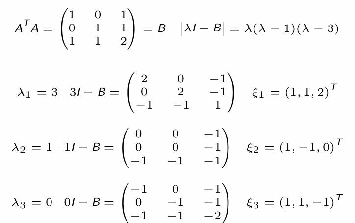
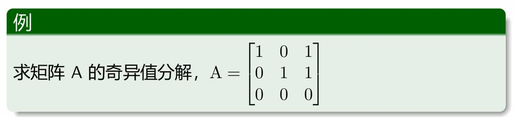
第 35 页 · 奇异值分解 (SVD)
奇异值分解 (SVD)
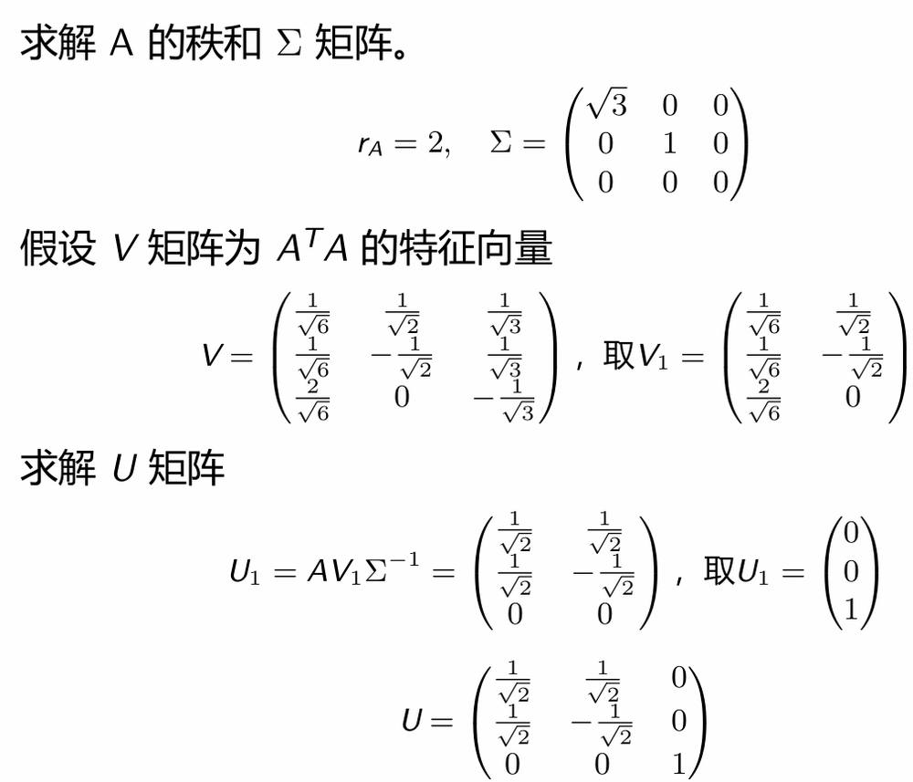
第 36 页 · 奇异值分解 (SVD)
奇异值分解 (SVD)
SVD 分解工作流程
第 37 页 · Python 实现奇异值分解 (SVD)
Python 实现奇异值分解 (SVD)
Listing 2: SVD 奇异值分解
1
2
3
4
5
6
7
8
9
10
11
12
13
14
15
16
17
from numpy.linalg import svd import numpy as np
data = [[1,0,1], [0,1,1],[0,0,0]]
data = np.array(data) #数组转化为array
U, S, Vt = svd(data, full_matrices=False) # 进行SVD分解 np.set_printoptions(formatter={'float': '{:␣0.3f}'.format}) print(f'左奇异矩阵U:{U}')
print(f'奇异值S:{S}')
print(f'右奇异矩阵V:{Vt.T}') # 注意：Vt是 V 的转置
############结果############
左奇异矩阵 U: [[ 0.707 -0.707 0.000]
[ 0.707 0.707 0.000]
[ 0.000 0.000 1.000]]
奇异值 S: [ 1.732 1.000 -0.000]
右奇异矩阵 V: [[ 0.408 -0.707 0.577]
[ 0.408 0.707 0.577]
[ 0.816 0.000 -0.577]]
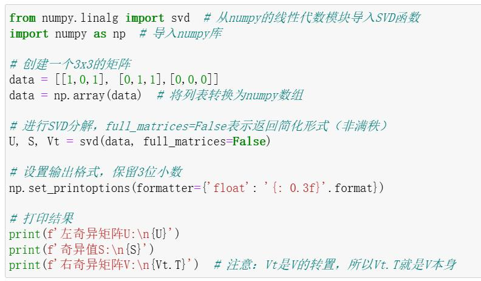
第 38 页 · SVD 与 PCA 的关系
SVD 与 PCA 的关系
考虑样本数据的协方差矩阵
C = XTX = VΣTUUTΣVT = VΣTΣVT
在进行 PCA 方法时，对协方差矩阵 C 进行特征值分解，我们有
C = AΛAT
如果令 Λ = ΣTΣ
则可以看出 PCA 中选取最大的 k 个特征值与 SVD 中选取最大的 k 个奇异值，在降维效果上是等价的。